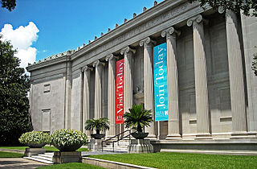

Houston is the most populous city in Texas and in the Southern United States.
It is the fourth most populous city in the United States after New York City, Los Angeles
and Chicago, and the sixth most populous city in North America. With a population of 2,304,580
in 2020, Houston is located in Southeast Texas near Galveston Bay and the Gulf of Mexico, it
is the seat and largest city of Harris County and the principal city of the Greater Houston
metropolitan area, which is the fifth-most populous metropolitan statistical area in the
United States and the second-most populous in Texas after Dallas–Fort Worth. Houston is
the southeast anchor of the greater megaregion known as the Texas Triangle.
Samuel Houston
The city of Houston was founded by land investors on August 30, 1836, at the confluence of
Buffalo Bayou and White Oak Bayou (a point now known as Allen's Landing) and incorporated as
a city on June 5, 1837. The city is named after former General Sam Houston, who was
president of the Republic of Texas and had won Texas's independence from Mexico at the Battle
of San Jacinto 25 miles (40 km) east of Allen's Landing. After briefly serving as the capital
of the Texas Republic in the late 1830s, Houston grew steadily into a regional trading center for
the remainder of the 19th century.
Allen's Landing
Nicknamed the "Bayou City", "Space City", "H-Town", and "the 713", Houston has become a global city,
with strengths in culture, medicine, and research. The city has a population from various ethnic and
religious backgrounds and a large and growing international community. Houston is the most diverse
metropolitan area in Texas and has been described as the most racially and ethnically diverse major
city in the U.S. It is home to many cultural institutions and exhibits, which attract more than
seven million visitors a year to the Museum District. The Museum District is home to nineteen museums,
galleries, and community spaces. Houston has an active visual and performing arts scene in the Theater
District, and offers year-round resident companies in all major performing arts.
The Houston area occupying land that was home of the Karankawa and the Atakapa indigenous
peoples for at least 2,000 years before the first known settlers arrived.
These tribes are almost nonexistent today; this was most likely caused by foreign disease,
and competition with various settler groups in the 18th and 19th centuries.
However, the land then remained largely uninhabited from the late 1700s until settlement in the 1830s.
Early settlement to the 20th century
John Kirby Allen
The Allen brothers—Augustus Chapman and John Kirby—explored town sites on Buffalo Bayou and Galveston Bay.
According to historian David McComb, "[T]he brothers, on August 26, 1836, bought from Elizabeth E. Parrott,
wife of T.F.L. Parrott and widow of John Austin, the south half of the lower league [2,214-acre (896 ha)
tract] granted to her by her late husband. They paid $5,000 total, but only $1,000 of this in cash;
notes made up the remainder."
Houston, c. 1873
The Allen brothers ran their first advertisement for Houston just four days later in the Telegraph and Texas
Register, naming the notional town in honor of President Sam Houston.They successfully lobbied the
Republic of Texas Congress to designate Houston as the temporary capital, agreeing to provide the new
government with a state capitol building. About a dozen persons resided in the town at the beginning
of 1837, but that number Republic of Texas granted Houston incorporation on June 5, 1837, as James S.
Holman became its first mayor. In the same year, Houston became the county seat of Harrisburg County
(now Harris County).
World War II to the late 20th century
Service on the Home Front
When World War II started, tonnage levels at the port decreased and shipping activities were suspended;
however, the war did provide economic benefits for the city. Petrochemical refineries and manufacturing
plants were constructed along the ship channel because of the demand for petroleum and synthetic rubber
products by the defense industry during the war. Ellington Field, initially built during World War I,
was revitalized as an advanced training center for bombardiers and navigators.
During the late 1970s, Houston had a population boom as people from the Rust Belt states moved to Texas in
large numbers. The new residents came for numerous employment opportunities in the petroleum industry,
created as a result of the Arab oil embargo. With the increase in professional jobs, Houston has become a
destination for many college-educated persons, most recently including African Americans in a reverse Great
Migration from northern areas.
In 1997, Houstonians elected Lee P. Brown as the city's first African American mayor.
Early 21st century
Houston has continued to grow into the 21st century, with the population increasing 17% from 2000 to
2019.
Oil & gas have continued to fuel Houston's economic growth, with major oil companies including Phillips 66,
ConocoPhillips, Occidental Petroleum, Halliburton, and ExxonMobil having their headquarters in the Houston
area. In 2001, Enron Corporation, a Houston company with $100 billion in revenue, became engulfed in an
accounting scandal which bankrupted the company in 2001. Health care has emerged as a major industry in
Houston. The Texas Medical Center is now the largest medical complex in the world and employs 106,000
people.
Three new sports stadiums opened downtown in the first decade of the 21st century. In 2000, the Houston
Astros opened their new baseball stadium, Minute Maid Park, in downtown adjacent to the old Union Station.
The Houston Texans were formed in 2002 as an NFL expansion team, replacing the Houston Oilers, which had
left the city in 1996. NRG Stadium opened the same year. In 2003, the Toyota Center opened as the home for
the Houston Rockets. In 2005, the Houston Dynamo soccer team was formed. In 2017, the Houston Astros won
their first World Series.
Hurricane Harvey flooding
Flooding has been a recurring problem in the Houston area, exacerbated by a lack of zoning laws, which
allowed unregulated building of residential homes and other structures in flood-prone areas. In June
2001, Tropical Storm Allison dumped up to 40 inches (1,000 mm) of rain on parts of Houston, causing what was
then the worst flooding in the city's history and billions of dollars in damage, and killed 20 people in
Texas. In August 2005, Houston became a shelter to more than 150,000 people from New Orleans, who
evacuated from Hurricane Katrina. One month later, about 2.5 million Houston-area residents evacuated
when Hurricane Rita approached the Gulf Coast, leaving little damage to the Houston area. This was the
largest urban evacuation in the history of the United States. In May 2015, seven people died after
12 inches of rain fell in 10 hours during what is known as the Memorial Day Flood. Eight people died in
April 2016 during a storm that dropped 17 inches of rain. The worst came in late August 2017, when
Hurricane Harvey stalled over southeastern Texas, much like Tropical Storm Allison did sixteen years
earlier, causing severe flooding in the Houston area, with some areas receiving over 50 inches (1,300 mm) of
rain.The rainfall exceeded 50 inches in several areas locally, breaking the national record for
rainfall. The damage for the Houston area was estimated at up to $125 billion U.S. dollars, and was
considered to be one of the worst natural disasters in the history of the United States, with the death
toll exceeding 70 people.
Geography
Houston is 165 miles (266 km) east of Austin, 88 miles (142 km) west of the Louisiana border, and
250 miles (400 km) south of Dallas. The city has a total area of 637.4 square miles (1,651 km2); this
comprises over 599.59 square miles (1,552.9 km2) of land and 22.3 square miles (58 km2) covered by
water. Most of Houston is on the gulf coastal plain, and its vegetation is classified as Western Gulf
coastal grasslands while further north, it transitions into a subtropical jungle, the Big Thicket.
Satellite image of Houston, 2020
Much of the city was built on forested land, marshes, or swamps, and all are still visible in
surrounding
areas. Flat terrain and extensive greenfield development have combined to worsen flooding. Downtown
stands about 50 feet (15 m) above sea level, and the highest point in far northwest Houston is about 150
feet (46 m) in elevation. The city once relied on groundwater for its needs, but land subsidence forced
the city to turn to ground-level water sources such as Lake Houston, Lake Conroe, and Lake
Livingston. The city owns surface water rights for 1.20 billion US gallons (4.5 Gl) of water a day
in addition to 150 million US gallons (570 Ml) a day of groundwater.
Houston has four major bayous passing through the city that accept water from the extensive drainage
system.
Buffalo Bayou runs through Downtown and the Houston Ship Channel, and has three tributaries: White Oak
Bayou, which runs through the Houston Heights community northwest of Downtown and then towards Downtown;
Brays Bayou, which runs along the Texas Medical Center; and Sims Bayou, which runs through the south of
Houston and Downtown Houston. The ship channel continues past Galveston and then into the Gulf of
Mexico.
Climate
Houston's climate is classified as humid subtropical (Cfa in the Köppen climate classification system),
typical of the Southern United States. While not in Tornado Alley, like much of Northern Texas, spring
supercell thunderstorms sometimes bring tornadoes to the area. Prevailing winds are from the south and
southeast during most of the year, which bring heat and moisture from the nearby Gulf of Mexico and
Galveston Bay.
During the summer, temperatures reach or exceed 90 °F (32 °C) an average of 106.5 days per year,
including a
majority of days from June to September. Additionally, an average of 4.6 days per year reach or exceed
100
°F (37.8 °C). Houston's characteristic subtropical humidity often results in a higher apparent
temperature, and summer mornings average over 90% relative humidity. Air conditioning is ubiquitous in
Houston; in 1981, annual spending on electricity for interior cooling exceeded $600 million (equivalent
to
$1.79 billion in 2021), and by the late 1990s, approximately 90% of Houston homes featured air
conditioning
systems. The record highest temperature recorded in Houston is 109 °F (43 °C) at Bush
Intercontinental Airport, during September 4, 2000, and again on August 27, 2011.
Buffalo Bayou after Hurricane Harvey, August 2017
Space Shuttle Independence replica covered in snow, 2017
Houston has mild winters, with occasional cold spells. In January, the normal mean temperature at George
Bush Intercontinental Airport is 53 °F (12 °C), with an average of 13 days per year with a low at or
below
32 °F (0 °C), occurring on average between December 3 and February 20, allowing for a growing season of
286
days. Twenty-first century snow events in Houston include a storm on December 24, 2004, which saw 1 inch
(3 cm) of snow accumulate in parts of the metro area, and an event on December 7, 2017, which
precipitated 0.7 inches (2 cm) of snowfall.
Houston generally receives ample rainfall, averaging about 49.8 in (1,260 mm) annually based on records
between 1981 and 2010. Many parts of the city have a high risk of localized flooding due to flat
topography, ubiquitous low-permeability clay-silt prairie soils, and inadequate
infrastructure. During the mid-2010s, Greater Houston experienced consecutive major flood events in
2015 ("Memorial Day"), 2016 ("Tax Day"), and 2017 (Hurricane Harvey). Overall, there have
been more casualties and property loss from floods in Houston than in any other locality in the United
States. The majority of rainfall occurs between April and October (the wet season of Southeast Texas),
when the moisture from the Gulf of Mexico evaporates extensively over the city.
Architecture
The Bank of America Center
Houston had the fifth-tallest skyline in North America (after New York City, Chicago, Toronto and Miami)
and
36th-tallest in the world in 2015. A seven-mile (11 km) system of tunnels and skywalks links Downtown
buildings containing shops and restaurants, enabling pedestrians to avoid summer heat and rain while
walking
between buildings. In the 1960s, Downtown Houston consisted of a collection of mid-rise office
structures.
Downtown was on the threshold of an energy industry–led boom in 1970. A succession of skyscrapers was
built
throughout the 1970s—many by real estate developer Gerald D. Hines—culminating with Houston's tallest
skyscraper, the 75-floor, 1,002-foot (305 m)-tall JPMorgan Chase Tower (formerly the Texas Commerce
Tower),
completed in 1982. It is the tallest structure in Texas, 19th tallest building in the United States, and
was
previously 85th-tallest skyscraper in the world, based on highest architectural feature. In 1983, the
71-floor, 992-foot (302 m)-tall Wells Fargo Plaza (formerly Allied Bank Plaza) was completed, becoming
the
second-tallest building in Houston and Texas. Based on highest architectural feature, it is the
21st-tallest
in the United States. In 2007, Downtown had over 43 million square feet (4,000,000 m2) of office space.
Centered on Post Oak Boulevard and Westheimer Road, the Uptown District boomed during the 1970s and
early
1980s when a collection of midrise office buildings, hotels, and retail developments appeared along
Interstate 610 West. Uptown became one of the most prominent instances of an edge city. The tallest
building
in Uptown is the 64-floor, 901-foot (275 m)-tall, Philip Johnson and John Burgee designed landmark
Williams
Tower (known as the Transco Tower until 1999). At the time of construction, it was believed to be the
world's tallest skyscraper outside a central business district. The new 20-story Skanska building and
BBVA Compass Plaza are the newest office buildings built in Uptown after 30 years. The Uptown District
is also home to buildings designed by noted architects I. M. Pei, César Pelli, and Philip Johnson. In
the
late 1990s and early 2000s, a mini-boom of midrise and highrise residential tower construction occurred,
with several over 30 stories tall. Since 2000 over 30 skyscrapers have been developed in
Houston; all told, 72 high-rises tower over the city, which adds up to about 8,300 units. In 2002,
Uptown had more than 23 million square feet (2,100,000 m2) of office space with 16 million square feet
(1,500,000 m2) of class A office space.
Economy
Houston Ship Channel
Houston is recognized worldwide for its energy industry—particularly for oil and natural gas—as well as for
biomedical research and aeronautics. Renewable energy sources—wind and solar—are also growing economic bases
in the city, and the City Government purchases 90% of its annual 1 TWh power mostly from wind, and
some from solar. The city has also been a growing hub for technology startup firms. Major
technology and software companies within Greater Houston include Crown Castle, KBR, Cybersoft, Houston Wire
& Cable, and HostGator. On April 4, 2022, Hewlett Packard Enterprise relocated its global headquarters from
California to the Greater Houston area. The Houston Ship Channel is also a large part of Houston's
economic base.
Because of these strengths, Houston is designated as a global city by the Globalization and World Cities
Study Group and Network and global management consulting firm A.T. Kearney. The Houston area is the top
U.S. market for exports, surpassing New York City in 2013, according to data released by the U.S. Department
of Commerce's International Trade Administration. In 2012, the Houston–The Woodlands–Sugar Land area
recorded $110.3 billion in merchandise exports. Petroleum products, chemicals, and oil and gas
extraction equipment accounted for roughly two-thirds of the metropolitan area's exports last year. The top
three destinations for exports were Mexico, Canada, and Brazil.
Culture
Johnson Space Center
Located in the American South, Houston is a diverse city with a large and growing international
community. The Greater Houston metropolitan area is home to an estimated 1.1 million (21.4 percent)
residents who were born outside the United States, with nearly two-thirds of the area's foreign-born
population from south of the United States–Mexico border since 2009. Additionally, more than one in
five foreign-born residents are from Asia. The city is home to the nation's third-largest concentration
of consular offices, representing 92 countries.
Many annual events celebrate the diverse cultures of Houston. The largest and longest-running is the annual
Houston Livestock Show and Rodeo, held over 20 days from early to late March, and is the largest annual
livestock show and rodeo in the world. Another large celebration is the annual night-time Houston Gay
Pride Parade, held at the end of June. Other notable annual events include the Houston Greek
Festival, Art Car Parade, the Houston Auto Show, the Houston International Festival, and the Bayou
City Art Festival, which is considered to be one of the top five art festivals in the United
States.
Houston is highly regarded for its diverse food and restaurant culture. Several major publications have
consistently named Houston one of "America's Best Food Cities". Houston received
the official nickname of "Space City" in 1967 because it is the location of NASA's Lyndon B. Johnson Space
Center. Other nicknames often used by locals include "Bayou City", "Clutch City", "Crush City", "Magnolia
City", "H-Town", and "Culinary Capital of the South".
Arts and theater

Museum of Fine Arts, Houston
The Houston Theater District, in Downtown, is home to nine major performing arts organizations and six
performance halls. It is the second-largest concentration of theater seats in a Downtown area in the United
States.
Houston is one of few United States cities with permanent, professional, resident companies in all major
performing arts disciplines: opera (Houston Grand Opera), ballet (Houston Ballet), music (Houston Symphony
Orchestra), and theater (The Alley Theatre, Theatre Under the Stars). Houston is also home to folk
artists, art groups and various small progressive arts organizations.
Houston attracts many touring Broadway acts, concerts, shows, and exhibitions for a variety of
interests. Facilities in the Theater District include the Jones Hall—home of the Houston Symphony
Orchestra and Society for the Performing Arts—and the Hobby Center for the Performing Arts.
The Museum District's cultural institutions and exhibits attract more than 7 million visitors a
year. Notable facilities include The Museum of Fine Arts, the Houston Museum of Natural Science,
the Contemporary Arts Museum Houston, the Station Museum of Contemporary Art, the Holocaust Museum Houston,
the Children's Museum of Houston, and the Houston Zoo.
Tourism and recreation
Bayou Place
The Theater District is a 17-block area in the center of Downtown Houston that is home to the Bayou Place
entertainment complex, restaurants, movies, plazas, and parks. Bayou Place is a large multilevel building
containing full-service restaurants, bars, live music, billiards, and Sundance Cinema. The Bayou Music
Center stages live concerts, stage plays, and stand-up comedy. Space Center Houston is the official
visitors' center of NASA's Lyndon B. Johnson Space Center. The Space Center has many interactive exhibits
including moon rocks, a shuttle simulator, and presentations about the history of NASA's manned space flight
program. Other tourist attractions include the Galleria (Texas's largest shopping mall, in the Uptown
District), Old Market Square, the Downtown Aquarium, and Sam Houston Race Park.
Houston's current Chinatown and the Mahatma Gandhi District are two major ethnic enclaves, reflecting
Houston's multicultural makeup. Restaurants, bakeries, traditional-clothing boutiques, and specialty shops
can be found in both areas.
Houston is home to 337 parks, including Hermann Park, Terry Hershey Park, Lake Houston Park, Memorial Park,
Tranquility Park, Sesquicentennial Park, Discovery Green, Buffalo Bayou Park and Sam Houston Park. Within
Hermann Park are the Houston Zoo and the Houston Museum of Natural Science. Sam Houston Park contains
restored and reconstructed homes which were originally built between 1823 and 1905. A proposal has been
made to open the city's first botanic garden at Herman Brown Park.
Of the 10 most populous U.S. cities, Houston has the most total area of parks and green space, 56,405 acres
(228 km2). The city also has over 200 additional green spaces—totaling over 19,600 acres (79 km2) that
are managed by the city—including the Houston Arboretum and Nature Center. The Lee and Joe Jamail Skatepark
is a public skatepark owned and operated by the city of Houston, and is one of the largest skateparks in
Texas consisting of a 30,000-ft2 (2,800 m2)in-ground facility.
The Gerald D. Hines Waterwall Park—in the Uptown District of the city—serves as a popular tourist attraction
and for weddings and various celebrations. A 2011 study by Walk Score ranked Houston the 23rd most walkable
of the 50 largest cities in the United States.
Sports
Toyota Center is home of the Houston Rockets
Houston has sports teams for every major professional league except the National Hockey League. The Houston
Astros are a Major League Baseball expansion team formed in 1962 (known as the "Colt .45s" until 1965) that have
won the World Series in 2017 and 2022 and appeared in it in 2005, 2019, and 2021. It is the only MLB team to
have won pennants in both modern leagues. The Houston Rockets are a National Basketball Association
franchise based in the city since 1971. They have won two NBA Championships, one in 1994 and another in 1995,
under star players Hakeem Olajuwon, Otis Thorpe, Clyde Drexler, Vernon Maxwell, and Kenny Smith. The
Houston Texans are a National Football League expansion team formed in 2002. The Houston Dynamo is a Major
League Soccer franchise that has been based in Houston since 2006, winning two MLS Cup titles in 2006 and 2007.
The Houston Dash team plays in the National Women's Soccer League. The Houston SaberCats are a rugby team
that plays in Major League Rugby.
NRG Stadium is the home of the Houston Texans.
Minute Maid Park (home of the Astros) and Toyota Center (home of the Rockets), are in Downtown Houston. Houston
has the NFL's first retractable-roof stadium with natural grass, NRG Stadium (home of the Texans). Minute
Maid Park is also a retractable-roof stadium. Toyota Center also has the largest screen for an indoor arena in
the United States built to coincide with the arena's hosting of the 2013 NBA All-Star Game. PNC Stadium is
a soccer-specific stadium for the Houston Dynamo, the Texas Southern Tigers football team, and Houston Dash, in
East Downtown. Aveva Stadium (home of the SaberCats) is in south Houston. In addition, NRG Astrodome was the
first indoor stadium in the world, built in 1965. Other sports facilities include Hofheinz Pavilion
(Houston Cougars basketball), Rice Stadium (Rice Owls football), and NRG Arena. TDECU Stadium is where the
University of Houston's Cougars football team plays.
Houston has hosted several major sports events: the 1968, 1986 and 2004 Major League Baseball All-Star Games;
the 1989, 2006 and 2013 NBA All-Star Games; Super Bowl VIII, Super Bowl XXXVIII, and Super Bowl LI, as well as
hosting the 1981, 1986, 1994 and 1995 NBA Finals, winning the latter two, and hosting the 2005 World Series,
2017 World Series, 2019 World Series, 2021 World Series and 2022 World Series. The city won its first baseball
championship during the 2017 event and won again 5 years later. NRG Stadium hosted Super Bowl LI on February 5,
2017. Houston will host multiple matches during the 2026 FIFA World Cup.
Media
Houston Chronicle
The primary network-affiliated television stations are KPRC-TV channel 2 (NBC), KHOU channel 11 (CBS), KTRK-TV
channel 13 (ABC), KTXH channel 20 (MyNetworkTV), KRIV channel 26 (Fox), KIAH channel 39 (The CW), KXLN-DT
channel 45 (Univision), KTMD-TV channel 47 (Telemundo), KPXB-TV channel 49 (Ion Television), KYAZ channel 51
(MeTV) and KFTH-DT channel 67 (UniMás). KTRK-TV, KTXH, KRIV, KTXH, KIAH, KXLN-DT, KTMD-TV, KPXB-TV, KYAZ and
KFTH-DT operate as owned-and-operated stations of their networks.
The Houston–The Woodlands–Sugar Land metropolitan area is served by one public television station and two public
radio stations. KUHT channel 8 (Houston Public Media) is a PBS member station and is the first public television
station in the United States. Houston Public Radio is listener-funded and comprises one NPR member station, KUHF
(News 88.7). The University of Houston System owns and holds broadcasting licenses to KUHT and KUHF. The
stations broadcast from the Melcher Center for Public Broadcasting on the campus of the University of Houston.
Houston additionally is served by the Pacifica Foundation public radio station KPFT.
Houston and its metropolitan area are served by the Houston Chronicle, its only major daily newspaper with wide
distribution. Hearst Communications, which owns and operates the Houston Chronicle, bought the assets of the
Houston Post—its long-time rival and main competition—when Houston Post ceased operations in 1995. The Houston
Post was owned by the family of former Lieutenant Governor Bill Hobby of Houston. The only other major
publication to serve the city is the Houston Press—which was a free alternative weekly newspaper before the
destruction caused by Hurricane Harvey resulted in the publication switching to an online-only format on
November 2, 2017. Other notable publications include Houston Forward Times, OutSmart, and La Voz de
Houston. Houston Forward Times is one of the largest black-owned newspapers in the metropolitan area and owned
by Forward Times Publishing Company. OutSmart is an LGBT magazine in Houston and was ranked "Best Local
Magazine" by the Houston Press in 2008. La Voz de Houston is the Houston Chronicle's Spanish-language
newspaper and the largest in the area.